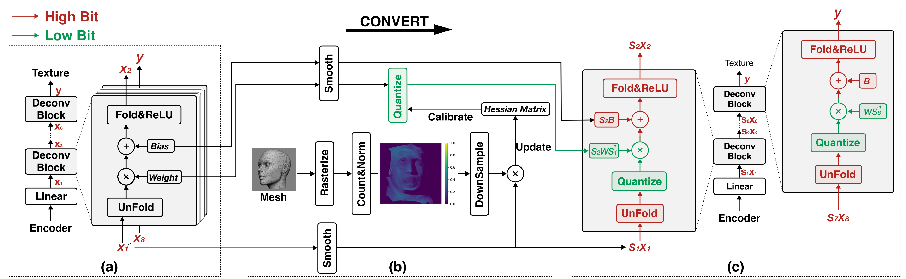

Photorealistic Codec Avatars (PCA), which enable high-fidelity human face rendering, are increasingly adopted in AR/VR applications to support immersive communication and interaction via deep learning-based generative models. However, these models impose significant computational demands, making real-time inference challenging on resource-constrained AR/VR devices such as head-mounted displays (HMDs), where latency and power efficiency are critical.
To address this challenge, we propose an efficient post-training quantization (PTQ) method tailored for Codec Avatar models, enabling low-precision execution without compromising output quality. In addition, we design a custom hardware accelerator that can be integrated into the system-on-chip (SoC) of AR/VR devices to further enhance processing efficiency.
Building on these components, we introduce ESCA, a full-stack optimization framework that accelerates PCA inference on edge AR/VR platforms. Experimental results demonstrate that ESCA boosts FovVideoVDP quality scores by up to +0.39 over the best 4-bit baseline, delivers up to 3.36× latency reduction, and sustains a rendering rate of 100 FPS in end-to-end tests, satisfying real-time VR requirements.

Overview of the ESCA framework showing the integration of ICAS, FFAS, and UV-weighted Hessian-based quantization.
| Method | Precision | Front | Left | Right |
|---|---|---|---|---|
| Full Model | FP32 | 6.5364 | 5.9480 | 5.8625 |
| Adaround+LSQ | W4A4 | 4.2531 | 3.6143 | 3.5606 |
| POCA | 5.2310 | 4.3838 | 4.3457 | |
| 2DQuant | 5.2987 | 4.3948 | 4.3712 | |
| GPTQ | 5.4980 | 4.5868 | 4.5729 | |
| ICAS (Ours) | 5.5901 | 4.7317 | 4.7536 | |
| UV-W (Ours) | 5.7559 | 4.8130 | 4.8187 | |
| ICAS-UV (Ours) | 5.6438 | 4.9145 | 4.9057 | |
| FFAS-UV (Ours) | 5.8541 | 4.9795 | 4.9605 | |
| Adaround+LSQ | W8A8 | 6.2106 | 5.5004 | 5.4381 |
| POCA | 6.4827 | 5.8511 | 5.7565 | |
| 2DQuant | 6.4983 | 5.8313 | 5.7497 | |
| GPTQ | 6.2359 | 5.6188 | 5.3613 | |
| ICAS (Ours) | 5.6007 | 5.3913 | 5.0762 | |
| UV-W (Ours) | 6.5271 | 5.9101 | 5.7610 | |
| ICAS-UV (Ours) | 6.3690 | 5.6615 | 5.5998 | |
| FFAS-UV (Ours) | 6.5241 | 5.8589 | 5.8071 | |
Higher FovVideoVDP scores indicate better perceptual quality. Our FFAS-UV method achieves the best results in W4A4 quantization.
| Model | Device | Latency (ms) |
|---|---|---|
| Encoder (full) | Snapdragon XR2 Gen 2 | 13.80 |
| Encoder (full) | NVIDIA Jetson Orin NX 16GB | 9.96 |
| Encoder (8 bit) | Snapdragon XR2 Gen 2 | 4.00 |
| Encoder (8 bit) | Our hardware accelerator | 3.05 |
| Decoder (full) | NVIDIA Jetson Orin NX 16GB | 50.35 |
| Decoder (full) | Snapdragon XR2 Gen 2 | 25.80 |
| Decoder (8 bit) | Snapdragon XR2 Gen 2 | 14.50 |
| Decoder (8 bit) | Our hardware accelerator | 12.51 |
| Decoder (4 bit) | Our hardware accelerator | 3.13 |
Our custom hardware accelerator achieves up to 3.36× latency reduction compared to commercial AR/VR platforms.